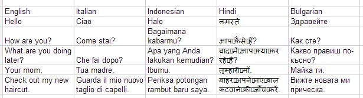
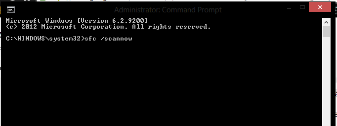
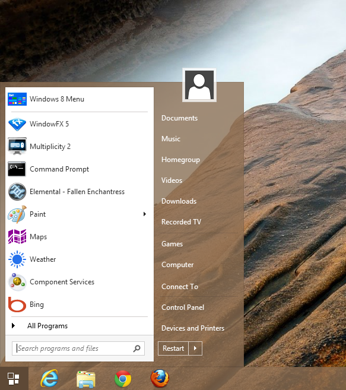
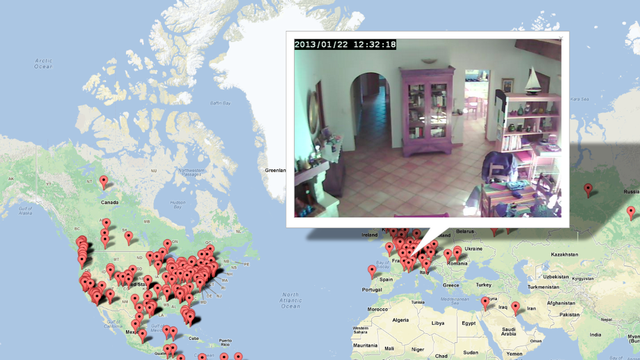

The 2014 Flagship Killer
April 23rd, 2014By Mathew Ruff
Last night OnePlus unvieled their new flagship device the OnePlus One. It’s been told it’s going to be the Nexus 5 killer, besting it in specs, price, and security. Get hyped [...]
Read OnWindows 8.1 - Update 1
April 10th, 2014By Mathew Ruff
The new Windows 8.1 Update has been out for a few days now bringing a ton of new features. I've gotta say, Microsoft is really starting to listen to it's users. We’ve have had the ability to to boot directly to the desktop since 8.1 was released, but now users can run metro apps from ‘within’ the desktop. Meaning when in a full screen application, the desktop taskbar is reachable on the bottom of the screen. Along with access to the taskbar we can also pin these metro apps to it, for quick access from the desktop [...]
Read OnMarch 27, 2014
By Mathew Ruff
This time I'm covering "Say Your Number" by Volbeat off of their 2007 album The Strength / The Sounds / The Songs.
Why Everyone Should Learn Code
Feb 20th, 2014By Mathew Ruff
Lately I've been wanting to expand on my coding knowledge. I mean I know code, but I really want to work on key languages and areas. I've heard of a few places online to learn code before but a co-worker of mine recommended Codecademy. I figured hey why not, I haven't really refreshed my knowledge of code in a while. I signed up and started taking their free Javascript lessons. After a few days [...]
Visualforce for Mobile
February 4th, 2014By Mathew Ruff
Because Visualforce is basically straight HTML, you can really use any form of Mobile Framework you wish. You could even build your own if you wanted! Salesforce also provides a few different options for you to take advantage of, one not requiring any knowledge of code. Here are a few examples of what you can do [...]
Communities and Force.com
February 3rd, 2014By Mathew Ruff
Visualforce allows us to create and edit web pages using Salesforce's Apex code to pull data from our organization and object and display them on our site. Just like a normal website we can use HTML, CSS and Java to hard code pages allowing us to fully customize our site's look and feel [...]
A Day Using Salesforce Communities
December 21, 2013By Mathew Ruff
Communities are branded spaces for your employees, customers, and partners to connect. You can customize and create communities to meet your business needs, then transition seamlessly between them. Communities are a great way to share information and collaborate with people outside your company who are key to your business processes, such as customers or partners [...]
Using Google Apps Scripts to auto translate text
By Mathew Ruff
Tuesday in class we went over the uses of Google App Scripts. I gotta say I didn't think it would be all that great, but after using it I saw how useful it could be. Tim showed us how you can take a script and turn it into a polling service that populates a Google spreadsheet. The question was who would win the final four in NCAA. All we had to do was text our pick (A-D) to his phone number and it populated on the spreadsheet, pretty easy.
After that, we were on our own to read through an in class assignment that allowed us to create a few scripts for reading current stock prices, text messaging, and translating English text to any language we want using Google Translate.
It's very easy to do once you get the script written out. Doing that is a little tricky, it's like the VBA language. Overall it's a useful service that I didn't know existed and it shows how easy technology is integrating services together.
August 4, 2013
By Mathew Ruff
My cover of "Lift Me Up" by Five Finger Death Punch.
Windows giving you error messages? Check to see if it's corrupt
By Mathew Ruff
Think your version of Windows is corrupt? Have you been seeing error messages referencing .dll files? Having problems using Windows in general? A quick way to see if your operating system is corrupt or missing important files is to use system file checker to verify the integrity of Windows' files. To do this, click start and type 'cmd.' When the cmd shortcut comes up, right-click on it and select "Run as Administrator." When the command line opens up type in "sfc /scannow."
This command will have Windows scan all OS files and verify their accuracy with a list of all the files it should have in the system. If it finds any integrity violations, it tries to repair them. If however windows cannot repair the files, it will let you know, and if you are running Windows XP it will actually ask you for the OS disc that was shipped with your machine and will attempt to copy the missing .dll files from it. If you're using Vista and up, you'll have to resort to re-installing the OS.. on the bright side, you'll have a fresh out-of-the-box machine when you're all done.
How to bring back the Windows 7 Start Menu in Windows 8
By Mathew Ruff
As requested here are some programs that will allow you to bring back that old start menu if you'd rather use that. The one I think had the best interface is Start8, it's free to try for 30 days and is only $4.99 to buy (not bad if you hate the new menu). Start8 matches the look and feel of Windows 8.
Here are also a few more I found that are pretty good looking. On a side note it may be worth mentioning that the new Metro interface is a much needed improvement to the original start menu. You can pin everything you need on the start screen for one click opening of frequently used apps. There is also a fantastic search feature, all you have to do is start typing on the Start Menu and it will appear on the screen. Whichever way you choose to do it keep in mind that change is good and learning a new program or operating system is something everyone should be doing in this ever-changing tech world.
Want to spy on people through their webcams?
By Mathew Ruff
Perusing the internet today I came across this article. It talks about this new web app that has come out that allows you to connect to peoples insecure webcams and look through them. I'm currently in the CIS 394 class on Privacy and this was especially intriguing to me. Apparently there is a security flaw in some Trendnet home security cameras that allows you to do this and the web app was created to showcase this flaw so it will be brought to the attention of the public. The app even uses Google Maps to show you where the person is located in the world (surprisingly accurate).
Trendnet has notified its customers about the flaw and has sent a firmware update (although not everyone has installed it!) to fix the problem. I find this very shocking, and hope that these kinds of security flaws don't extend to other types of cameras like laptop webcams, or smart phones... Interesting article nonetheless.
January 15, 2013
By Mathew Ruff
I've been using Zapier and IFTTT for the last few days and I have to say, I'm really making the web work for me. I've set up a few different automated tasks that help me in my day to day life. One commonly used one is for the weather. If it's going to rain tomorrow, IFTTT sends me a text telling me to "Bring an umbrella!", and lets me know what the forecast is, very useful.
Next I moved onto a more job based task with Zapier. On the weekends I'm a computer technician for Staples and we work with a lot of PCs at a time, a lot of which are running the new Windows OS. So keeping up with Windows 8 is a must for us to learn the ins and outs of the new system and keep track of all the changes over Windows 7. My Zap allows me to search RSS feeds to look for "Windows 8" and forward the links to my phone via sms based on what RSS feeds I give it. This is very useful to never miss a posting, and keeps me sharp on new topics and workarounds for common issues with upgrading to the new system.
I've also set a Zap up to email me a link when a new YouTube video is posted by a certain username which helps me keep up with my favorite subscriptions. This synergy of applications is certainly useful for everyday automation and requires little knowledge of coding or application design to use allowing anyone to make their accounts work together for them.